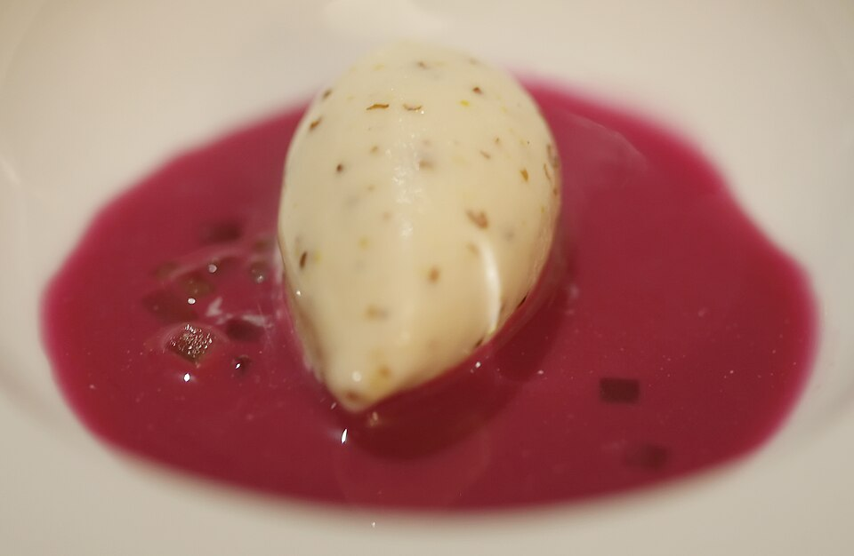

Aves · Outras aves
Pato com repolho roxo

Ingredientes
- 2 patos de 2 kg cada, cortados em pedaços
- Sal e pimenta-do-reino a gosto
- 60 g de toucinho defumado em fatias grossas
- 1 limão
- 1 cebola picada
- 60 g de manteiga
- 2 colheres (sopa) de conhaque
- 1 xícara (chá) de vinho tinto
- 1 repolho roxo
- 1 colher (chá) de açúcar mascavo
- 1 maçã sem casca e sem sementes, cortada em cubinhos
- 1 colher (chá) de vinagre
Modo de preparo
- Tempere os pedaços de pato com sal, pimenta-do-reino e suco de limão.
- Cubra os pedaços de pato, sem encostar, com o toucinho defumado. Prenda com palitos.
- Aqueça a manteiga e frite os pedaços de pato até dourarem ligeiramente. Acrescente a cebola e deixe dourar.
- Regue com o conhaque, acenda e deixe flambar. Acrescente o vinho, leve ao fogo e ferva até reduzir pela metade.
- Junte a água restante, os pedaços de pato já dourados e o repolho. Cozinhe até o pato ficar macio.
- Junte a maçã e o vinagre, cozinhe por mais alguns minutos e sirva os patos rodeados pelo repolho roxo.
Observação: o trecho final da foto está pequeno; a ficha mantém a transcrição principal e pode ser conferida depois.